7个国际单位：
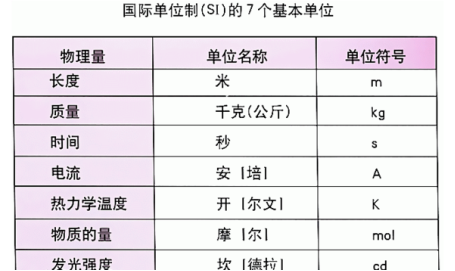
函数是数集的映射。
函数的单调性
定义：定义域I D包含于I
在D内任意x1,x2都有：
若x1<x2 =>f(x1)<f(x2) 增函数
若x1<x2 =>f(x1)>f(x2) 减函数
最值：最大值
1 任意x f(x)<=M
2 存在x0 f(x0)=M
一次函数y=ax+b
当a>0时，在R内增函数
当a<0时，在R内减函数
二次函数的单调性：
y=ax2+bx+c
a>0 开口向上
(-∞ -b/2a) 减区间
(-b/2a，+∞) 增区间
x=-b/2a y=(4ac-b2)/4a 最小值
a<0 开口向下
(-∞ -b/2a) 增区间
(-b/2a，+∞) 减区间
x=-b/2a y=(4ac-b2)/4a 最大值
例题：
f(x)=x2+1 在(-∞,0)上是减函数
解：取x1,x2∈(-∞,0) 且x1<x2
f(x1)-f(x2) = x12-x22
= (x1+x2)(x1-x2)
因为：x1,x2∈(-∞,0) 所以 x1+x2<0
因为：x1<x2 所以x1-x2<0
因为：x1+x2<0 且 x1-x2<0
所以 (x1+x2)(x1-x2)>0 所以f(x1)>f(x2)
所以f(x)=x2+1在(-∞,0)上是增函数。
例题：一个二次函数 y=x2
A:(0,1)增函数
B:(-1,0)有单调性
C:(-1,1)是单调的
一个二次函数只要定义域不包含对称轴，那在该域内是单调的
例题：f(x) = 4x2-kx-8 在[5,20]上是单调的
解：对称轴 x=-(-k)/2*4 = k/8;
要么k/8>=20 得 k>=160
要么k/8<=5 的k<=40
插入姓名歧视
例题25：f(x) = x2+2(a-1)x+2
(-∞,4]是个减函数
求a的范围
解：绘制函数图像
对称轴：x=-2(a-1)/2=1-a 必须在4的右边，
如果小于4那么x在(-∞,4]区间内函数无单调性
则有1-a >=4 那么a <= -3
反比例函数：
y=k/x
单调性：
当k>0时
(-∞,0)(0,+∞)单调递减
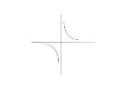
当k<0时
(-∞,0)(0,+∞)单调递增
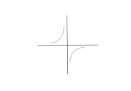
例19：
P=k/v
波义耳定律：在定量定温下，理想气体的体积与气体的压强成反比。
证明其为减函数：
任取v1,v2∈(0,+∞)
且v1<v2
P1-P2=k/v1-k/v2=k(v2-v1)/k1*k2>0
因为有v1<v2,P1>P2所以P=k/v是减函数
练习：
证明f(x)=1-1/x 在(-∞,0)上是增函数
取x1,x2 ∈ (-∞,0) 且x1<x2
f(x1)-f(x2)
= (1-1/x1)-(1-1/x2)
= 1/x2 - 1/x1
= (x1-x2)/x2*x2 < 0
所以f(x1) < f(x2)
所以f(x)=1-1/x 在(-∞,0)上是增函数
练习：
f(x)是 减函数
△x=x2-x1
△y=f(x2)-f(x1)
求△x*△y的取值范围
解：
如果△x>0 则 △y<0
如果△x<0 则 △y>0
所以△x和△y正负号永远相反
所以△x*△y<0
练习
(f(x1)-f(x2))/(x1-x2)>0
分子分母正负号相同，说明f(x)为增函数
(f(x1)-f(x2))/(x1-x2)>0
分子分母正负号不同，说明f(x)为减函数
练习：
a+b <=0 f(x)是减函数
解：a <= -b 有 f(a) >= f(-b)
b <= -a 有 f(b) >= f(-a)
不等式同方向合并，只能加
得 f(a)+f(b) >= f(-a)+f(-b)
函数的平移：
y=f(x)
左移a格 y = f(x+a)
右移a格 y = f(x-a)
上移a格 y = f(x) + a
下移a格 y = f(x) - a
例题：y = 2x + 1
左移 y = 2(x+1) + 1
右移 y = 2(x-1) + 1
上移 y = 2x + 1 + 1
下移 y = 2x + 1 - 1
左加右减，上加下减
练习：
f(x)=2/(x-1) x∈[2,6]
求最值？
1、画图看增减性
2、将f(x)=2/(x-1)看做是f(x)=2/x 右移一格
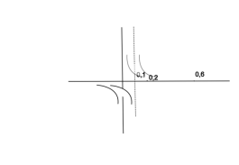
3、观察函数图，函数在[2,6]区间是单调减函数，
x=2时取最大值，x=6时取最小值
f(2) = 2/(2-1)=2
f(6) = 2/(6-1)=2/5
画图练习：
f(x) = 1-1/x
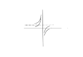
不等式同方向可以合并，不能减
函数的奇偶性（对称性）：
（1） 奇函数：任意 f(-x)=-f(x)
（2） 偶函数：任意 f(-x)=f(x)
（3） 定义域关于原点对称
（4） 奇函数图像关于原点对称
（5） 奇函数的f(0)如果存在一定有 f(0)=0
（6） 偶函数图像关于y轴对称
画图练习：
y = x3的图像
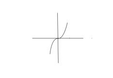
练习：奇偶性判断
（1）f(x) = x4
解：x ∈ R 关于原点对称
f(-x) = (-x)4=x4=f(x)
为偶函数
（2）f(x) = x5
解：x ∈ R 关于原点对称
f(-x) = (-x)5=-x5=-f(x)
为奇函数
（3）f(x) = x + 1/x
解：x ∈ R 且x≠0 关于原点对称
f(-x) = -x + 1/(-x) = -(x+1/x) = -f(x)
为奇函数
（4）f(x)=1/x2
解：x ∈ R 且x≠0 关于原点对称
f(-x) = 1/(-x)2 = 1/x2= f(x)
为偶函数
（4）幂函数：f(x) = xn
n为奇数为奇函数，n为偶数为偶函数
（5）多项式函数
y = a0+a1x+a2x2+...anxn
只包含偶次项是偶函数
只包含奇次项是奇函数
如果都包含，则为非奇非偶函数
一下为练习，定义域可忽略
x+x3 奇函数
x2+x4+1 偶函数
1+x3 非奇非偶函数
f(x) = 3x2+2x4 偶函数
f(x) = x3-2x 奇函数
f(x) = x + 1/x 奇函数
f(x) = x2+1 偶函数
练习：x>=0 且f(x) = x(1+x) 为奇函数，x∈R 求表达式
解：f(x) = x2+x
开口向上
对称轴 x = -1/2
对称点 （0,0）
图如下：
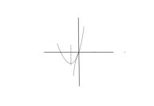
去x<0
f(x) f(-x) = (-x)2+(-x) = x2-x
x<0 -x>0
有因为f(x)是奇函数，所以有 f(x) = -f(-x) = -(x2-x) = x-x2
故f(x)的表达式为：
x(1+x) x>=0
f(x) =
x(1-x) x<0
练习：f(x)为奇函数 f(x) = +1 (x > 0)
f(x) f(-x) = +1
x<0 -x>0
f(x) = -f(-x) = --1
例题：
f(x)=(x2+1)/(x2-1)
f(-x)=((-x)2+1)/((-x)2-1)=(x2+1)/(x2-1)=f(x)
偶函数
练习1：有一个奇函数 x>0时 f(x)=x2。
求x<0时，f(x)=_____
解：
f(x) f(-x)=(-x)2=x2
x<0 得 -x>0
有根据奇函数f(x)=-f(-x)=-x2
该函数图像如下：
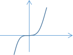
练习2：有函数f(x)=x-2。求增减区间。可得一下性质
1 偶函数
2 关于y轴对称
3 x-n,n∈(0,+∞)。这种类型的函数图像都类似x-1，如下：
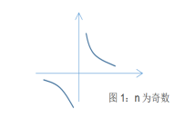
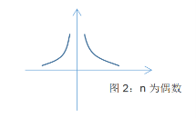
4 2为偶数，该函数图像如图2，图像关于y轴对称，
(-∞,0)是增函数，(0,+∞)上是减函数
练习3：f(x)为偶函数，在(0,+∞)上是减函数
请证明在(-∞,0)是增函数
取x1,x2∈(-∞,0) 且x1<x2
因为x1<x2
所以-x1>-x2>0
又因为f(x)为偶函数，所以f(x1)=f(-x1) f(x2)=f(-x2)
有因为在(0,+∞)上是减函数，得 f(-x1)<f(-x2) =>f(x1)<f(x2)
x1<x2且f(x1)<f(x2)，所以在(-∞,0)是增函数
练习：
f(x) 在[-2,3]区间是增函数
求x的范围使y = f(x + 5)是增函数。
解：
x+5 ∈ [-2,3]
-2<= x+5 <= 3
得 -7 <= x <=-2
练习：
f(x) = (x - 2)2 x∈[-1,3] f(x)是减函数
求f(x+1)的减区间
解：给f(x)作图，从图中可得
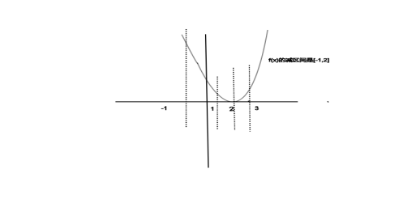
f(x)的减区间是[-1,2]那么f(x+1)的减区间也是[-1,2]
有x+1 ∈ [-1,2]
得 -1<=x+1<=2
得 -2<=x<=1
练习：
y = x2+|x|
求单调减区间
解：
（1）去绝对值得
y=-x2+x (x>=0)
f(x)=
y=-x2-x (x<0)
给该函数绘图：
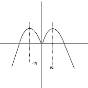
由图可知函数的单调减区间是[-1/2,0] [1/2,+∞)
最大值 x=1/2 y=1/4
最小值不存在
函数的增减性：
(f(x1)-f(x2))/(x1-x2)>0增函数
(f(x1)-f(x2))/(x1-x2)<0减函数
函数的凹凸性：分大下凸
f((x1+x2)/2)=(f(x1)+f(x2))/2 直线
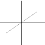
f((x1+x2)/2)<(f(x1)+f(x2))/2 下凸
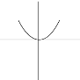
f((x1+x2)/2)>(f(x1)+f(x2))/2 上凸
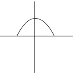
练习：有函数f(x)=ax+b 请证明f((x1+x2)/2)=(f(x1)+f(x2))/2
f((x1+x2)/2) = a*(x1+x2)/2+b
(f(x1)+f(x2))/2
= (ax1+b+ax2+b)/2
=a*(x1+x2)/2+b
=f((x1+x2)/2)
练习：有函数g(x)=x2+ax+b 请证明它的凹凸性
g((x1+x2)/2)=((x1+x2)/2)2+a((x1+x2)/2)+b
(g(x1)+g(x2))/2
=(x12+ax1+b+x22+ax2+b)/2
=(x12+x22+ax1+ax2)/2+b
g((x1+x2)/2)-(g(x1)+g(x2))/2
=((x1+x2)/2)2+a((x1+x2)/2)+b - (x12+x22+ax1+ax2)/2 - b
=（x12+2x1*x2+x22）/ 4 + (ax1+ax2)/2 - (x12+x22+ax1+ax2)/2
=（x12+2x1*x2+x22）/ 4 - 2*(x12+x22)/4
= -(x12-2x1*x2+x22) / 4
= -(x1-x2)2/4
因为(x1-x2)2>=0
所以-(x1-x2)2/4<=0
所以g((x1+x2)/2)-(g(x1)+g(x2))/2<=0
g((x1+x2)/2)<=(g(x1)+g(x2))/2
如果x1≠x2则有 g((x1+x2)/2)<(g(x1)+g(x2))/2
所以函数为下凸函数
练习：
有函数 f(x) = ax2+bx+3a+b 定义域为[a-1,2a] 求a
该函数为偶函数
解：
多项式函数为偶函数，则只包含偶次幂项，
所以b=0
有因为偶函数定义域关于原点对称
所以 a-1 + 2a = 0
a = 1/3
练习：f(x)在[-6,6]域内是偶函数，且f(3)>f(1)
b选项和d选项肯定是不对的，因为只有f(3)和f(1)
的关系，不可能求出函数值来，无法判断f(0)和f(2)
f(-1) = f(1) 所以f(-1)<f(3)
练习：
(x-a)(x-b)(x-c)...(x-z)
求x10项的系数
构造函数：将一个非奇非偶函数构造成奇函数和偶函数的和
练习：f(x) = x3+x2+x+1
g(x) = x3+x
h(x) = x2+1
f(x) = g(x) + h(x)
练习：
将1/(x2+x)拆成一奇一偶
构造函数的普遍做法：
f(x) = g(x) + h(x)
g(x) = (f(x)-f(-x))/2
h(x) = (f(x)+f(-x))/2
练习：
f(x) = x3+x2+x+1
f(-x) = -x3+x2-x+1
两者相减除以2得奇函数
g(x) = x3+x
两者相加除以2得偶函数
练习：
f(x)=x|x|+Px x∈R
求f(x)的奇偶性
1、去绝对值
x2+Px (x>=0)
f(x)=
-x2+Px (x<0)
f(x)=x2+Px
x>=0
-x<0 f(-x)=-x2-Px
所以f(x) = -f(-x) 为奇函数
练习：
f(x) = x2005+ax3-b/x-8 已知f(-2)=10 求f(2)
解：将非奇非偶函数构造成奇函数
g(x)=x2005+ax3-b/x = f(x)+8
g(-2)=f(-2)+8=18
g(2) = -18 = f(2)+8
所以f(2)=-26